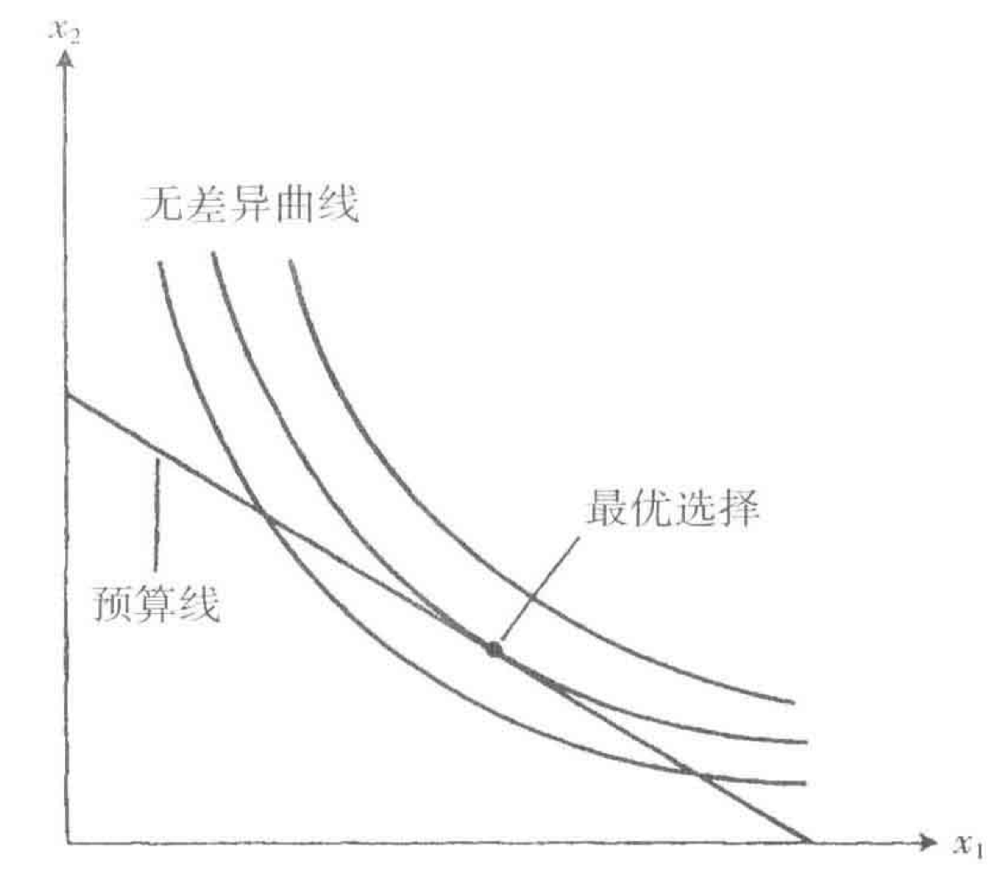
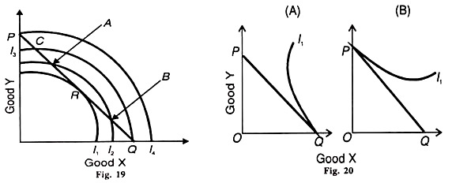

第一讲：最优化问题概述
课程信息
成绩构成：
- 考勤（15分）：总计3次，每次5分；
- 期中考试（15分）
- 期末考试（70分）
教材：
- 《经济理论中的最优化方法》 迈克西特
- 《动态最优化基础》 蒋中一
最优化问题概述
一般表述
一个典型的最优化问题可以表述为：
\[ \begin{aligned} \mathop{\max/\min}_{x} & \quad F(x) \\ & \quad G(x) \leq 0 \\ & \quad H(x) = 0 \end{aligned} \tag{P} \]
- 选择变量 \(x \in X\)
- 目标函数 \(F(x): X\rightarrow R\),
- 约束条件:
- 不等式约束 \(G(x): X \rightarrow Y\)
- 等式约束 \(H(x): X \rightarrow Z\)
- \(X\)为选择变量\(x\)的取值空间（范围），\(R\)为实数空间, \(X, Y, Z\)可为多维（有限维）实数空间或无限维函数空间。
非线性规划问题(nonlinear programming, NLP)
当变量空间\(X\)和约束条件中函数的取值空间 \(Y, Z\) 均为有限维实数空间时，上述最优化问题(P)被称为非线性规划问题:
\[ \begin{aligned} \mathop{\min_{x_1, \cdots, x_n}} & f(x_1, x_2, \cdots, x_n) \\ s.t.\quad & g(x) \leq \boldsymbol{0} \\ & h(x) = \boldsymbol{0} \end{aligned} \tag{NLP} \]
其中
\[ g(x) = \begin{pmatrix} g_1(x_1, x_2, \cdots, x_n) \\ g_2(x_1, x_2, \cdots, x_n) \\ \vdots \\ g_m(x_1, x_2, \cdots, x_n) \end{pmatrix} \quad \text{和} \quad h(x) = \begin{pmatrix} h_1(x_1, x_2, \cdots, x_n) \\ h_2(x_1, x_2, \cdots, x_n) \\ \vdots \\ h_l(x_1, x_2, \cdots, x_n) \end{pmatrix} \]
消费者选择问题 I
给定消费者的效用函数形式，在完全竞争市场下，消费者面对给定的市场价格，在给定收入约束下，如何选择不同消费品的最优组合以最大化效用？对于这个问题：
- 消费者的选择变量是什么？
- 目标函数是什么？
- 约束条件是什么？
从另一个角度来看，如果消费者要达到一定的效用水平，如何最小化消费总支出？对应的选择变量、目标函数和约束条件是什么？如何用非线性规划的形式来表述上述问题？
消费者选择问题 II
效用最大化问题:
\[ \begin{aligned} \mathop{\max_{x_1, \cdots, x_n}} & U(x_1, x_2, \cdots, x_n) \\ s.t.\quad & p_1x_1 + p_2x_2 + \cdots p_nx_n \leq y \end{aligned} \]
支出最小化问题：
\[ \begin{aligned} \mathop{\min_{x_1, \cdots, x_n}} & p_1x_1 + p_2x_2 + \cdots p_nx_n \\ s.t. \quad & U(x_1, x_2, \cdots, x_n) \geq v \end{aligned} \]
古典变分法问题(calculus of variation)
当变量空间\(X\)为函数空间时，最优化问题(P)可称为函数空间的非线性规划问题。函数空间的最优化问题，包括古典变分法问题与在其基础上发展而来的最优控制问题。
一个最简变分法问题寻求符合端点条件的、使目标积分值最小的函数：
\[ \begin{aligned} \mathop{\min_{x(\cdot)}} & \int_{t_0}^{t_1} f(t, x(t), \dot{x}(t)) dt \\ s.t.\quad & x(t_0) = x_0, \quad x(t_1) = x_1. \end{aligned} \tag{CVP} \]
其中，\(\dot{x}(t) = dx(t)/dt\)表示\(x(t)\)的导函数。
最优控制问题(optimal control problem, OCP)
20世纪50年代，古典变分法进一步发展出最优控制理论(optimal control theory)，一个基础的最优控制问题如下：
\[ \begin{aligned} \mathop{\min}_{x(\cdot), u(\cdot)} \quad & \int_{t_0}^{t_1} f(t, x(t), u(t)) dt \tag{a} \\ s.t. \quad & \dot{x}(t) = \Phi(t, x(t), u(t)) \tag{b} \\ & x(t_0) = x_0 \tag{c} \end{aligned} \]
状态变量 \(x(t)\) 的变化由微分方程(b)决定，且通过(a)直接影响目标函数\(f(t, x, u)\);
控制变量 \(u(t)\) 会通过两种渠道影响最优值:
- 直接渠道是影响(a)中的目标函数;
- 间接渠道是影响(b)中的控制变量\(x(t)\)的值，进而影响目标函数.
最优经济增长问题（连续型）I
假设经济体中存在无限期生存的消费者：
- 经济体的人均产出完全转化为消费者的收入，且取决于人均资本存量和技术水平，即\(f(k(t))\);
- 消费者在每一时点上选择当期的消费\(c(t)\)和储蓄，且储蓄完全转化为下一期的投资，初始人均资本存量为\(k(0)\);
- 消费者的效用函数形式为\(U(c(t))\);
- \(\theta\)代表时间偏好率或主观贴现率，衡量了不同时点效用的替代程度。
在这个连续型最优经济增长问题中，消费者的状态变量、控制变量分别是什么？
最优经济增长问题（连续型）II
最优增长问题的核心是消费者在预期每期收入的情况下，选择最优的消费路径，并由此决定了相对应的资本路径，从而最大化其从现在到将来的效用贴现值总和。以最优控制问题的形式可以表述为：
\[ \begin{aligned} \mathop{\max}_{c(\cdot), k(\cdot)} \quad & \int_{0}^{\infty} U(c(t))e^{-\theta t} dt \tag{效用贴现值总和} \\ s.t. \quad & \dot{k}(t) = f(k(t)) - c(t) \tag{资本变动路径} \\ & k(0) = k_0 \tag{初始资本存量状态} \end{aligned} \]
在这个最优控制问题中，消费路径\(c(t)\)控制变量，资本存量\(k(t)\)是状态变量，该问题的最优解\(c(t), k(t)\)即表示最优的消费和资本的增长路径。
动态规划(dynamic programming)
当选择变量\(X\)是有限维向量时，要考虑的最优化问题也就是有限维空间的非线性规划问题(NLP)。如果选择函数\(X\)是无限维的离散变量\((x_1, x_2, \cdots)\)时，通常采取动态规划方法(dynamic programming, DP)：
\[ \begin{aligned} \mathop{\min_{x_t, u_t}} \quad & \sum_{t = 0}^{\infty} f(t, x_t, u_t) \\ s.t.\quad & x_{t+1} - x_{t} = g(t, x_t, u_t) \\ & x_0 = \bar{x}_0 \\ & u_t \in U \\ \end{aligned} \tag{DP} \]
其中\(t\)代表离散的时间，\(t = 0, 1, 2, \cdots\)，约束条件的动态方程一般称为差分方程。
无限期离散型Ramsey最优经济增长问题
用离散型变量描述上述最优经济增长问题时，可以重新表述为：
\[ \begin{aligned} \mathop{\max_{c_t, k_t}} & \sum_{t=0}^{\infty} \beta^t U(c_t) \\ s.t. \quad & k_{t+1} - k_{t} = f(k_t) - c_t, \quad t = 0, 1, \cdots \\ & k_0 = \bar{k}_0 \end{aligned} \]
离散形式的目标函数更直观地表述了每期消费效用贴现值的总和，差分方程也更直观地描述了前后期资本存量的变化。但不论是表述为连续形式还是离散形式，主要数学结论与经济学含义应该是一致的。
重温效用最大化问题
消费者的最优选择

考虑一个两商品的效用最大化问题，对于消费者而言：
- 选择变量是什么？
- 目标函数是什么？
- 约束条件是什么？
套利方法 I
在任意试验性的消费束下，考虑消费者选择的商品组合出现一个微小的变动：
- 如果这种微小变动带来效用的改进，那么后者将作为一个新的试验性消费束而被消费者采取；
- 一旦发现某个消费束已经无法用这种方式来改进，那么它就成为消费者的最优配置。
套利方法 II
当两种商品分别变动\(dx_1, dx_2\)时，消费者效用变化为： \[MU_1 dx_1 + MU_2 dx_2\]
- \(dx_1, dx_2\)代表对应商品的”一个微小（边际、无穷小量）变动”，意味着\(\Delta x \rightarrow 0\)，但不能理解为等于0;
- \(MU_1, MU_2\)代表对应商品的边际效用，意味着每单位商品增加所能额外给消费者带来的效用;
- \(dx_1\)和\(dx_2\)之间存在什么关系？{.text-danger}
套利方法 III
由于预算约束\(p_1 x_1 + p_2 x_2 = I\)的存在，\(dx_1\)和\(dx_2\)之间必然满足： \[p_1 dx_1 + p_2 dx_2 = dI\]
假设消费者的收入没有发生变化(\(dI = 0\))，则商品1消费数量的微小增加\(dx_1 > 0\)必然导致商品2消费数量的微小减少： \[dx_2 = - \frac{p_1}{p_2} dx_1 < 0\]
此时，消费者效用的边际变化为： \[ \begin{aligned} MU_1 & dx_1 + MU_2 dx_2 = \\ & p_1dx_1\big[\frac{MU_1}{p_1} - \frac{MU_2}{p_2}\big] \end{aligned} \]
套利方法 IV
如果在某个消费束\((x_1, x_2)\)处，消费者达到效用最大化，意味着\(x_1\)任意方向的变化（增加或减少），都至少不会增加消费者效用： \[p_1dx_1\big[\frac{MU_1}{p_1} - \frac{MU_2}{p_2}\big] \leq 0\]
具体而言
当\(x_1\)略微增加时，\(dx_1 > 0\)，必然有\(\frac{MU_1}{p_1} - \frac{MU_2}{p_2} \leq 0\);
当\(x_1\)略微减少时，\(dx_1 < 0\)，必然有\(\frac{MU_1}{p_1} - \frac{MU_2}{p_2} \geq 0\)。
综合上述可得，最优配置下的消费束必然满足无套利条件： \[ \frac{MU_1}{p_1} = \frac{MU_2}{p_2} \tag{no-arbitrage} \]
相切条件方法
从图形可以看出，最优化的消费束必然满足预算约束线和无差异曲线相切，即两者的斜率相等。将预算约束方程改写为： \[x_2 = (I/p_2) - x_1 (p_1/p_2)\]
可以看出预算约束线的斜率为\((p_1/p_2)\)。无差异曲线的斜率是消费者的边际替代率(MRS)，它等于商品边际效用的比率\((MU_1/MU_2)\)。
在最优选择处，无差异曲线的斜率（边际替代率）等于预算约束线的斜率（价格比），因而 \[MU_1/MU_2 = p_1/p_2\]
角点解
套利方法相比相切条件方法的优势在哪儿？考虑其中一种商品存在不被购买可能的情况：

收入的边际效用
假定消费者获得额外收入\(dI\)且全部用于消费，此时他可以
全部用于商品1，即购买额外的\((dI/p_1)\)单位的商品1，并取得额外的\((MU_1dI/p_1)\)单位的效用；
全部用于商品2，即购买额外的\((dI/p_2)\)单位的商品2，并取得额外的\((MU_2dI/p_2)\)单位的效用；
根据无套利条件(no-arbitrage condition)，这两个效用的增量必须相等，才能达到新的最优值点。此时消费者获得的边际效用为 \[\lambda dI \coloneqq MU_1dI/p_1 = MU_2dI/p_2\]
\(\lambda\)可以理解为收入的边际效用: \[\lambda \coloneqq MU_1/p_1 = MU_2/p_2\]
多商品情形
假定有\(n\)种商品，价格和数量分别为 \((p_1, p_2, \cdots, p_n)\)和\((x_1, x_2, \cdots , x_n)\)，在最优消费束下：
- 对于所有购买了正数量的商品，必然存在一个相同的边际效用，而这个值可以被解释为收入的边际效用\(\lambda\)；
- 对于没有被购买的商品而言，其边际效用对价格的比例必然小于或至多等于收入的边际效用 \(\lambda\)。
因此，对任意商品\(i\)而言： \[ MU_i/p_i \left\{ \begin{array}{ll} = \lambda, & \text{当 } x_i > 0\text{时} \\ \leq \lambda, & \text{当 } x_i = 0\text{时} \end{array} \right. \]
对于多个约束条件，我们可以对每个约束条件设置一个单独的\(\lambda\)，它可以理解为放松该约束条件的边际效用。
非紧的约束条件
假设一个有钱的消费者已经满足到无法花光所有收入，那么预算约束应该是一个不等式 \(p_1x_1 + p_2x_2 \leq I\)。
通过定义一种新商品\(x_3\)（“没有被花掉且不带来任何效用的收入”），其价格为1，那么预算方程将变为： \[p_1x_1 + p_2x_2 + x_3 = I\]
假设消费者选择了一个正的\(x_3\)：
- 那么对于 \(i = 3\)而言，\(\lambda = MU_3 = 0\)，意味着如果消费者没有花完所有收入，那么收入增量所带来的边际效用应该为零；
- 对于 \(x_1, x_2\)而言，由\(\lambda = 0\)可知，最优消费下\(MU_{i} = 0\)，意味着这些商品被消费到了一个产生零边际效用的水平。
数理基础 part I
不带约束的最优化问题
考虑多变量函数 \(f(\textbf{x}): D \subset R^{n} \rightarrow R, \textbf{x} = (x_1, \cdots, x_n)\):
- 如果存在\(\delta > 0\)，使得所有满足 \(x \in D, |\textbf{x} - \textbf{x}^{*}| < \delta\)的\(x\)都有\(f(\textbf{x}) \geq(\leq) f(\textbf{x}^{*})\)，则称 \(\textbf{x}^{*}\) 为局部极小(极大)值点；
- 如果对任意满足 \(\textbf{x} \in D, |\textbf{x} - \textbf{x}^{*}| < \delta, \textbf{x} \neq \textbf{x}^{*}\)的 \(\textbf{x}\)都有\(f(\textbf{x}) >(<) f(\textbf{x}^{*})\)，则称 \(\textbf{x}^{*}\)为局部严格极小(极大)值点；
- 若 \(\forall \textbf{x} \in D\) 都有 \(f(\textbf{x}) \geq(\leq) f(\textbf{x}^{*})\)，则称 \(\textbf{x}^{*}\) 为全局极小(极大)值点。
梯度向量和海塞矩阵
对于多变量函数\(f(\textbf{x}): D \subset R^{n} \rightarrow R\)，其梯度向量为： \[\nabla f(\textbf{x}) = (\frac{\partial f}{\partial x_1}, \cdots, \frac{\partial f}{\partial x_n})\]
记其二阶偏导数为\(f_{ij} = \frac{\partial^2 f}{\partial x_i \partial x_j}\)，其海塞矩阵为： \[ H(\textbf{x}) = \left[ \begin{array}{cccc} f_{11}& f_{12} &\cdots & f_{1n}\\ f_{21}& f_{22} &\cdots& f_{2n}\\ \vdots & \vdots & \ddots & \vdots \\ f_{n1}& f_{n2} &\cdots & f_{nn} \end{array} \right] \]
必要条件
设定义开集\(D\)上的函数\(f: D \subset R^{n} \rightarrow R\)在\(D\)上可微，若\(\textbf{x}^{*}\)是局部极小/极大值点，则有\(\nabla f(\textbf{x}) = \textbf{0}\)。
设定义开集\(D\)上的函数\(f: D \subset R^{n} \rightarrow R\)在\(D\)上二阶可微，若\(\textbf{x}^{*}\)是局部极小/极大值点，则有： \[\nabla f(\textbf{x}) = \textbf{0}, \quad d^{T}H(\textbf{x}^{*})d \geq 0, \quad \forall d \in R^{n}\]
二阶充分条件
设定义开集\(D\)上的函数\(f: D \subset R^{n} \rightarrow R\)在\(D\)上二阶可微，如果对于\(\textbf{x}^{*}\)有： \[\nabla f(\textbf{x}) = \textbf{0}, \quad d^{T}Hd > 0, \quad \forall d \in R^{n}, \quad d \neq 0.\]
则\(\textbf{x}^{*}\)是一个严格局部极小值点。
Proof. 考虑二阶泰勒展开： \[f(\textbf{x}^{*} + \epsilon d) = f(\textbf{x}^{*}) + \nabla f(\textbf{x})^{T} \epsilon d + \frac{1}{2}\epsilon^{2} d^{T}H(\textbf{x}^{*})d\]
这里，\(\forall d \in R^{n}, \theta \in [0,1], \epsilon \rightarrow 0\)。
带等式约束的最优化问题 I
考虑以下含等式约束的最优化问题： \[ \begin{aligned} \mathop{\max_{x_1, x_2}}\quad & f(x_1, x_2) \\ s.t.\quad & g(x_1, x_2) = 0 \end{aligned} \tag{NLP-1} \]
假定\(g\)满足隐函数定理的相关条件，则等式约束隐含了\(x_2 = x_2(x_1)\)，代入目标函数则有 \[f(x_1, x_2(x_2)) \coloneqq \phi(x_1)\]
且\(\frac{dx_2}{dx_1} = -\frac{g_{x_1}}{g_{x_2}}\)。其对\(x_1\)的一阶导数为 \[\frac{d\phi}{dx_1} = f_{x_1} - f_{x_2}\frac{g_{x_1}}{g_{x_2}}\]
带等式约束的最优化问题 II
根据无约束条件下最优化问题的一阶条件，对于\(\phi(x_1)\)有\(\frac{d\phi}{dx_1}(x_1^{*}) = 0\)。此时，不妨设\(\lambda = \frac{f_{x_2}(x^{*})}{g_{x_2}(x^{*})}\)，则有： \[f_{x_1}(x^{*}) + \lambda g_{x_1}(x^{*}) = 0\]
类似地，等式约束隐含了\(x_1 = x_1(x_2)\)，可以得出 \[f_{x_2}(x^{*}) + \lambda g_{x_2}(x^{*}) = 0\]
因此，带等式约束的最优化问题(NLP-1)在\(x^{*}\)处取得最优化的一阶必要条件等价于函数 \[\mathcal{L}(x_1, x_2, \lambda) = f(x_1, x_2) + \lambda g(x_1, x_2)\]
在\(x^{*}\)处取得最优化的一阶必要条件。
拉格朗日函数
称 \(\mathcal{L}(x_1, x_2, \lambda)\) 为拉格朗日(Lagrange)函数，则其在 \((x_1^{*}, x_2^{*}, \lambda^{*})\) 处取得最大值/最小值的一阶条件为：
\[ \left\{ \begin{array}{ccc} f_{x_1}(x_1^{*}, x_2^{*}) + \lambda^{*} g_{x_1}(x_1^{*}, x_2^{*}) = 0 \\ f_{x_2}(x_1^{*}, x_2^{*}) + \lambda^{*} g_{x_2}(x_1^{*}, x_2^{*}) = 0 \\ g(x_1^{*}, x_2^{*}) = 0 \end{array} \right. \]